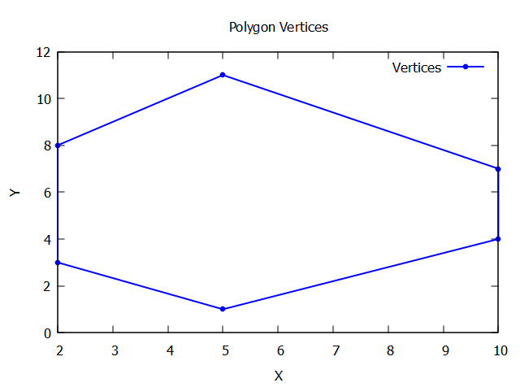

Concepts of C++ for this project!
Object Oriented Programming - C++ Class
A C++ class is a blueprint for creating objects. It encapsulates data for the object and methods to manipulate that data. Classes define the properties (data members) and behaviors (member functions or methods) that the objects created from the class can have.
C++ vector
Vector is used to store the elements dynamically. In C++, a vector is similar to dynamic arrays with the ability to resize itself automatically.
In the case of a static array, we cannot insert elements once it is full but when the size of a vector becomes full then it doubles its size from the original. That's why it is beneficial to use a vector instead of a static array.
Some of the functions associated with a vector:
begin(): Returns an iterator pointing to the first element in the vector.
end(): Returns an iterator pointing to the theoretical element that follows the last element in the vector.
rbegin(): Returns a reverse iterator pointing to the last element in the vector (reverse beginning). It moves from last to first element.
size(): Returns the number of elements in the vector.
empty(): Returns whether the vector is empty.
push_back(): It pushes the elements into a vector from the back.
pop_back(): It is used to pop or remove elements from a vector from the back.
insert(): It inserts new elements before the element at the specified position.
vectorname.push_back(value) is the same as append in python. The method is declared inside the
Constructors in C++
Constructor is a member function of a class, whose name is the same as the class name.
Constructor is a special type of member function that is used to initialize the data members for an object of a class automatically when an object of the same class is created.
Constructor is invoked at the time of object creation. It constructs the values i.e. provides data for the object that is why it is known as a constructor.
Constructors do not return value, hence they do not have a return type.
A constructor gets called automatically when we create the object of the class.
Parameterized Constructors make it possible to pass arguments to constructors. Typically, these arguments help initialize an object when it is created. To create a parameterized constructor, simply add parameters to it the way you would to any other function. When you define the constructor’s body, use the parameters to initialize the object.
The use of the initializer list : nodes(nodes) is a shorthand way of initializing the nodes member variable with the value passed as the parameter. It is a best practice to use initializer lists in constructors to initialize member variables, as it can improve performance and avoid unnecessary object copying.
#include <iostream>
using namespace std;
class Point {
private:
int x;
int y;
public:
Point(int i = 0, int j = 0): x(i), y(j) {}
/* The above use of Initializer list is optional as the
constructor can also be written as:
Point(int i = 0, int j = 0) {
x = i;
y = j;
}
*/
int getX() const { return x; }
int getY() const { return y; }
};
int main()
{
Point t1(10, 15);
cout << "x = " << t1.getX() << ", ";
cout << "y = " << t1.getY();
return 0;
}
Overall, this constructor allows you to create a Cell object by providing a std::vector of Vertices objects, and it initializes the nodes member variable with the provided value.
Code to compute the area and perimeter of a single vertex model
#include <iostream>
#include <vector>
#include <cmath>
using namespace std;
class Vertices{
public:
// for a 2D cell (x,y) are the vertex coordinates
// these are members of the class
double x;
double y;
// constructor to initialize the vertices
Vertices(double x1, double y1)
{
x = x1;
y = y1;
}
};
class Cell{
public:
// nodes is a vector of vertices
vector<Vertices>nodes;
// Shoelace's formula to calculate the area of the cell
double get_Area(){
// initialise area
double area = 0;
// loop through the vertices
for (int i = 0; i < nodes.size(); i ++){
// area calculated using the Shoelace formula
area += nodes[i].x * nodes[(i+1) % nodes.size()].y - nodes[(i+1) % nodes.size()].x * nodes[i].y;
}
// area = abs(area) / 2;
// although it is intuitive to think area as positive, here this is not the case
area = area / 2;
return area;
}
double get_Perimeter(){
// initialise perimeter
double perimeter = 0;
// loop through the vertices
for (int i = 0; i < nodes.size(); i++){
// find distance between vertices
double distance = sqrt(pow(nodes[i].x - nodes[(i+1) % nodes.size()].x, 2) + pow(nodes[i].y - nodes[(i+1) % nodes.size()].y, 2));
// add distance to perimeter
perimeter += distance;
}
return perimeter;
}
};
// main function will create an object of the class Cell and calculate the area and perimeter
int main(){
// declare an object of the class Cell
Cell C;
// assign vertices to the object
C.nodes = { {10, 7}, {5, 11}, {2, 8}, {2, 3},{5, 1}, {10, 4}};
// calculate the area
double area = C.get_Area();
// calculate the perimeter
double perimeter = C.get_Perimeter();
// print the area and perimeter
cout << "Area of the cell is: " << area << endl;
cout << "Perimeter of the cell is: " << perimeter << endl;
return 0;
}

C++ array
Suppose you want to store multiple values like "orange", "apple", "watermelon" to a single variable say "fruit". Then instead of declaring each of them separately as "fruit1", "fruit2", "fruit3" , we can make use of arrays. Arrays are used to store multiple values to a single variable, instead of declaring separate variable for each value.
string fruits[3] = {"orange", "apple", "watermelon"};
\\ here 3 is the number of elements in the array
Access an element of array by referring to index number
cout << fruits[1];
\\ Output: apple
An element can be replaced using the index number too
fruits[1] = "guava";
cout << fruits[1];
\\ Output: guava
Cell arrays
C++ pointers and &
address (&) assigns the address of the variable to another and pointer () assigns the value* of the variable to another.
var = 3000;
// take the address of var
ptr = &var;
// take the value available at ptr
val = *ptr;
https://www.freecodecamp.org/news/cpp-vector-how-to-initialize-a-vector-in-a-constructor/
Range-based for loop in C++
Syntax : for ( init-statement(optional) range-declaration : range-expression ){ loop statement }
auto specifier:
A placeholder type specifier designates a placeholder type that will be replaced later, typically by deduction from an initializer.
The placeholder auto may be accompanied by modifiers, such as const or &, which will participate in the type deduction. The placeholder decltype(auto) must be the sole constituent of the declared type
An example of range based for loop:
for (const auto& vertex : nodes) {}
Reference: https://en.cppreference.com/w/cpp/language/range-for https://en.cppreference.com/w/cpp/language/auto
size_t
A good rule of thumb is for anything that you need to compare in the loop condition against something that is naturally a std::size_t itself.
std::size_t is the type of any sizeof expression and as is guaranteed to be able to express the maximum size of any object (including any array) in C++. By extension it is also guaranteed to be big enough for any array index so it is a natural type for a loop by index over an array.
If you are just counting up to a number then it may be more natural to use either the type of the variable that holds that number or an int or unsigned int (if large enough) as these should be a natural size for the machine.
size_t is the result type of the sizeof operator.
Use size_t for variables that model size or index in an array. size_t conveys semantics: you immediately know it represents a size in bytes or an index, rather than just another integer.
Also, using size_t to represent a size in bytes helps making the code portable.
Reference: https://stackoverflow.com/questions/1951519/when-to-use-stdsize-t
Solving the problem of garbage values of last two coordinates
The issue with the huge or unexpected values for the last coordinates likely stems from accessing elements outside the bounds of the basal_nodes and apical_nodes arrays. This is because the loop iterates from 0 to N-1, and for the last iteration (when i = N-1), the code attempts to access basal_nodes[i + 1] and apical_nodes[i + 1], which are out of bounds when i + 1 = N. Accessing elements outside the bounds of a vector in C++ leads to undefined behavior, which in this case manifests as garbage values being read.
To fix this, you should ensure that the index wraps around to 0 when it reaches N, similar to how it's commented out in the code for the clockwise order of vertices. This can be achieved by using the modulo operator % with N to ensure the index stays within bounds.
Here's the corrected part of the loop:
// Corrected loop to ensure indices are within bounds
for (int i = 0; i < N; i++) {
vector<Vertices> nodes = {
// Ensure wrapping with modulo operation
apical_nodes[i], basal_nodes[i],
basal_nodes[(i + 1) % N], apical_nodes[(i + 1) % N]
};
cells.push_back(Cell(nodes));
// print the cell vertices
cout << "Cell " << i + 1 << " vertices: ";
for (const auto& vertex : nodes) {
cout << "(" << vertex.x << ", " << vertex.y << ") ";
}
cout << endl;
}
This change ensures that when i + 1 equals N, the index wraps around to 0, preventing out-of-bounds access and the resulting undefined behavior.